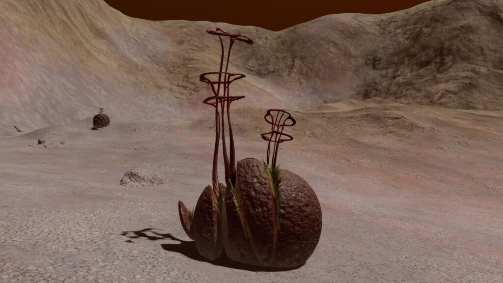
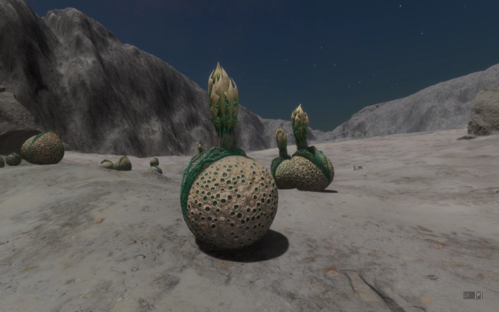
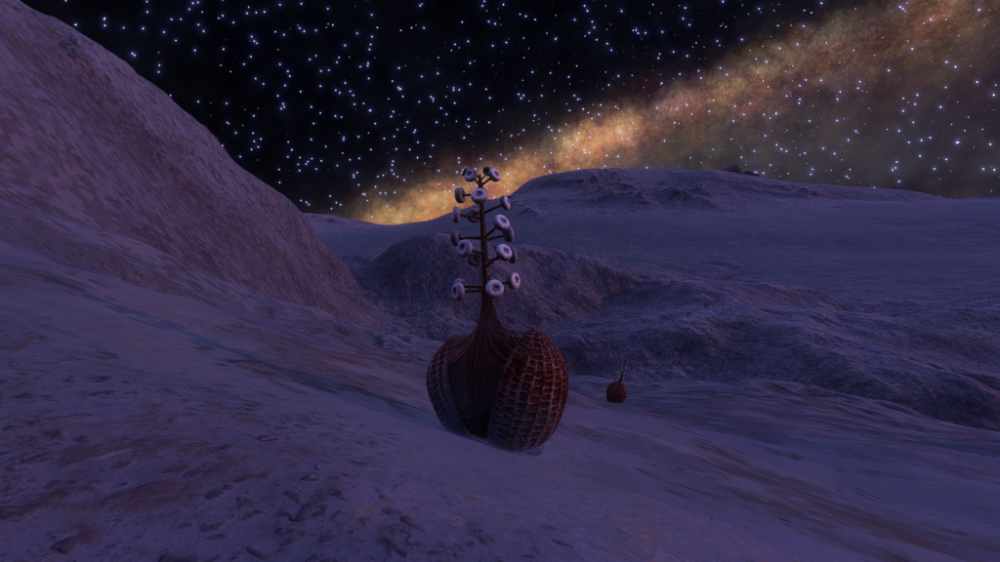
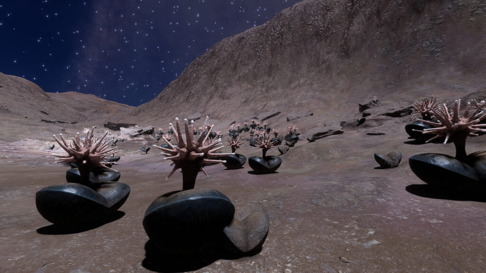

|  |  |  |  |
 |  |  |  |  |
 |  |  |  |  |
 |  |
A dusty profusion of Concha Renibus – Peach. Image courtesy of Cmdr. Eahlstan Fiskerne
Highly specialised complex extremophiles that have developed protective and sturdy motile shell structures. These open and close based on the suitability of the current environmental conditions. The shells are an organic structure with an excreted inorganic insulated and sometimes reflective casing that help the organism maintain homeostasis. The internal organisms, which are remarkably tough in their own right, are only exposed for metabolic and reproductive purposes.
Concha – where present on a planetary body – seem to excel in valleys and slightly undulating areas surrounded by hills or mountains and are often found in profusion at the foot of these.
Variant Determinant: Stellar Class / Material
Concha is one of the Genera with a dual variant determinant. The cross-Species rule for Stellar Class determinant holds true, i.e. Stellar Class X = Variant Colour Y across all Stellar Class determinant Species within the Genus.
For Stellar Class determinant Species in such Genera it is also possible to state generalised planetary body type and atmosphere preferences as these show a relatively limited set of values. The same is not true for the Material determinant Species. These show considerably more differentiation, to the extent that no generalisation will be made but each Material determinant Species treated individually.
Minimum Colonial Separation: 150m
| Species Name | Percentage of recorded Concha Population | Vista Genomics Offer Price |
|---|---|---|
| Concha Aureolas | 14.98% | 7,774,700 |
| Concha Labiata | 47.35% | 2,352,400 |
All data as at 30th September 3311.
For the most up-to-date statistics and Vista Genomics pricing, please visit:
Canonn Bioforge or the data-enriched Codex Regions.
Stellar Class and Variant
| Stellar Class | O | B | A | F | G | K | M | L | T | TTS | Ae | Y | W | D | N |
| Variant | In | Te | Gy | Tu | Re | Or | Ye | Li | Gr | Em |
Planetary Body Type: High Metal Content or Rocky
Atmosphere: Ammonia, Carbon Dioxide, Nitrogen or Water
Gravity: Less than 0.28G

These Concha are found on worlds with nitrogen-based atmospheres. Their rounded rock-like structure splits apart to extend long stalks topped with loops.
Planetary Body Type: High Metal Content (1%), Rocky (99%)
Atmosphere: Ammonia
Volcanism: Insignificant
Temperature Pressure Gravity
| Minimum | Average | Mode | Maximum | |
| Temperature (K) | 152.16 | 165.87 | 171.00 | 176.67 |
| Pressure (atm) | 0.000986931 | 0.002538906 | 0.001038424 | 0.013386672 |
| Gravity (G) | 0.04 | 0.13 | 0.13 | 0.27 |
Galactic Arm Preference: No Preference

A concha Species that thrives in atmospheres rich with carbon dioxide. The lip-like upper opening cracks apart to allow a vertical growth of spiky leaves and bright seeds to stretch upward.
Planetary Body Type: High Metal Content (2%), Rocky (98%)
Atmosphere: Carbon Dioxide
Volcanism: No Volcanism
Temperature Pressure Gravity
| Minimum | Average | Mode | Maximum | |
| Temperature (K) | 150.00 | 163.89 | 162.00 | 198.80 |
| Pressure (atm) | 0.002098405 | 0.015811114 | 0.003695049 | 0.098656271 |
| Gravity (G) | 0.04 | 0.08 | 0.05 | 0.27 |
Galactic Arm Preference: No Preference
| Species Name | Percentage of recorded Concha Population | Vista Genomics Offer Price |
|---|---|---|
| Concha Biconcavis | 0.74% | 19,010,800 |
| Concha Renibus | 36.93% | 4,572,400 |
All data as at 30th September 3311.
For the most up-to-date statistics and Vista Genomics pricing, please visit:
Canonn Bioforge or the data-enriched Codex Regions.

This Concha Species resembles a ridged, bisected egg until it cracks in half, allowing a thin stalk to sprout from its fleshy insides. This is covered with doughnut—shaped pods that create locations for chemical exchange.
Material and Variant
| Material | Antimony | Polonium | Ruthenium | Technetium | Tellurium | Yttrium |
| Variant | Peach | Red | Orange | White | Yellow | Gold |
Planetary Body Type: High Metal Content (2%), Rocky (98%)
Atmosphere: Nitrogen
Volcanism: None
Temperature Pressure Gravity
| Minimum | Average | Mode | Maximum | |
| Temperature (K) | 42.76 | 47.66 | 49.38 | 51.84 |
| Pressure (atm) | 0.000988365 | 0.002412439 | 0.000988365 | 0.009542105 |
| Gravity (G) | 0.05 | 0.19 | 0.2 | 0.27 |
Galactic Arm Preference: No obvious preference but volume of discoveries is relatively low.

A Species of Concha that relies on heat sources to survive. As the bisected growth increases in size, it sprouts a single stalk topped with an array of luminous fronds that facilitate metabolism.
Material and Variant
| Material | Cadmium | Mercury | Molybdenum | Niobium | Tin | Tungsten |
| Variant | Red | Mulberry | Peach | Blue | Aquamarine | White |
Planetary Body Type: High Metal Content (13%), Rocky (87%)
Atmosphere: Carbon Dioxide (59%), Water (41%)
Volcanism: Insignificant
Temperature Pressure Gravity
| Minimum | Average | Mode | Maximum | |
| Temperature (K) | 77.36 | 282.84 | 181.00 | 452.01 |
| Pressure (atm) | 0.009737493 | 0.070084859 | 0.037971861 | 0.098691160 |
| Gravity (G) | 0.04 | 0.12 | 0.05 | 0.27 |
Galactic Arm Preference: No Preference
| | | | |
| | | | |
| | | | |
| |